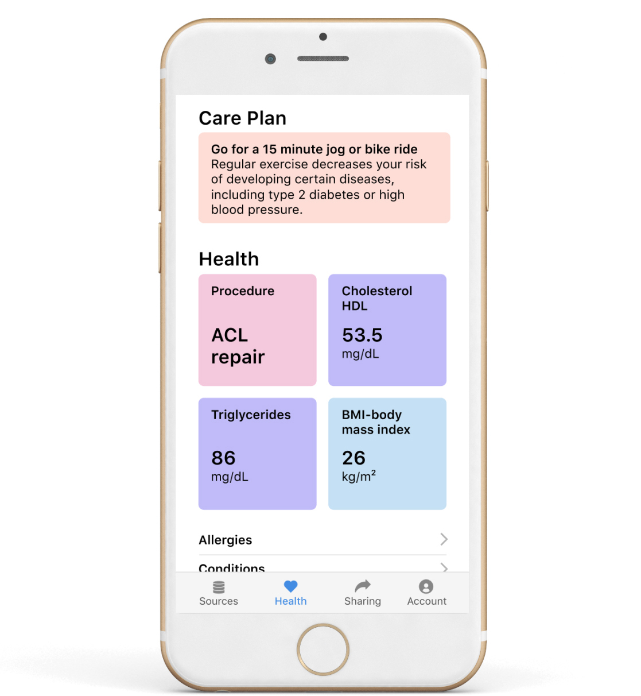

The Patient Data Manager collects all of your health data across hospitals and services to create a longitudinal health record. Use this always updating, accurate, digital record for managing any part of your health.
Every source. One picture.
Your health data comes from many hospitals, clinics, devices, and services. We help you connect all your health data into one service, the Patient Data Manager. Finally, you can see your complete health picture.
Own your health data.
By breaking down the barriers between you and your health data you'll be able to oversee your health like never before.
Share a lot, a little, or none.
Easily share your health data with your care team, from doctor to family. The care team will have a real-time connection to the health data they have been granted access to.
Prepare for an emergency.
Core healthcare information about you should be available to first responders and clinicians. Consent in advance for emergency access to primary care health data that can save your life.
Donate your data.
You can share your data for research. Your data can help researchers learn more about humans and discover new treatments.
Leave your legacy.
End of life directives, Do Not Resuscitate Orders (DNR), healthcare proxies, and living wills, are part of your healthcare and the Patient Data Manager.
Your health data is more than lab results, prescriptions, and blood pressure readings. It's life data.
Patient Data Use Agreement (PDUA)
The legal agreement between the patient and the PDM. This is a step towards the patient owning and controlling their health data. Review and collaborate on the current PDUA draft. Learn More
Patient Health Record (PHR)
A visual representation of a patient's entire health record, birth to death, clinical to non-clinical.
Patient Data Receipt (PDR)
A fully documented receipt of a health transaction – from hospital visits to wearables. See health metrics, services performed, financials, related documentation, and a transparent list of the parties that can see the data.
PDM Marketplace
The PDM marketplace will allow organizations and developers to build new functionality to enhance the PDM experience. One could create a care planning tool or allow a Patient Reported Outcome (PRO) to become influential in care – just a few possibilities to benefit from the patient owning their health data.
Contact pdm@goinvo.com for feedback and how to work together.
The Patient Data Manager is licensed under Apache 2.0.
{kind=link}
{kind=link}